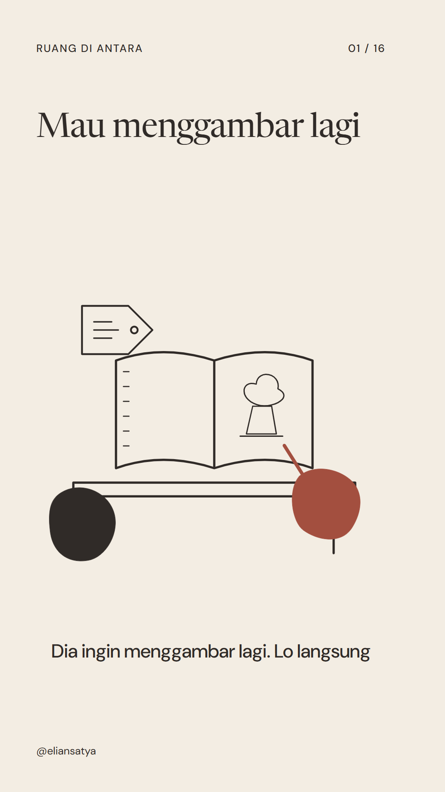
Dia ingin menggambar lagi. Lo langsung menyarankan jualan. Kenapa dia malah terdiam?
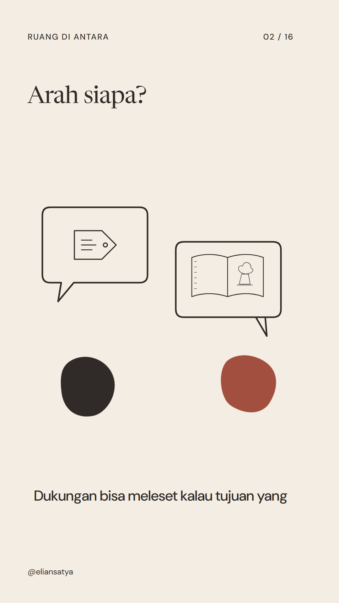
Dukungan bisa meleset kalau tujuan yang dibantu berbeda dari yang dia inginkan.
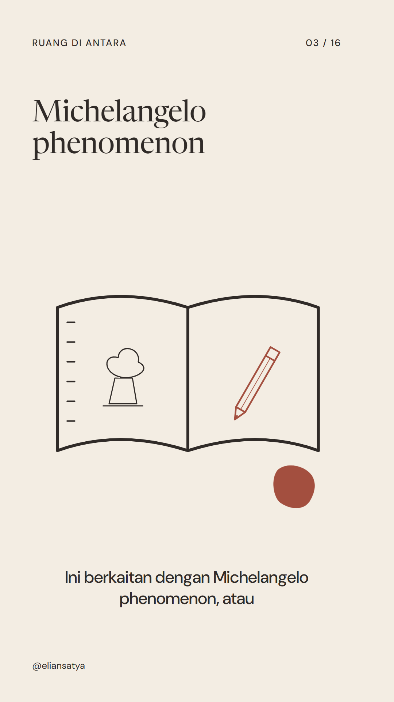
Ini berkaitan dengan Michelangelo phenomenon, atau fenomena Michelangelo.
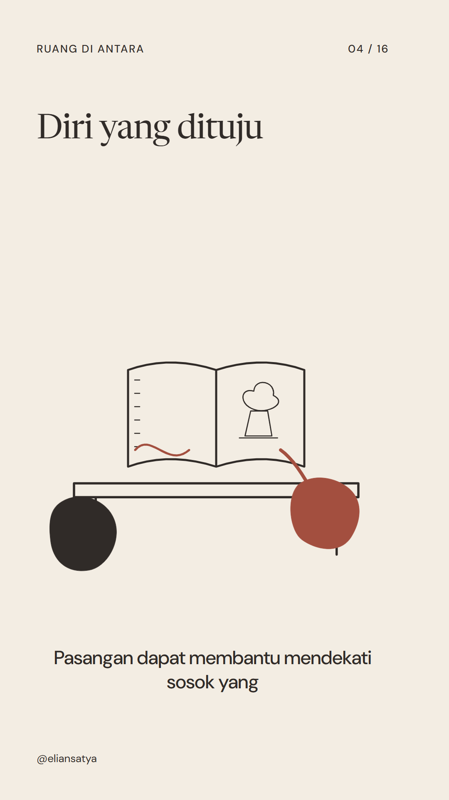
Pasangan dapat membantu mendekati sosok yang ingin kita jadi, lewat cara melihat dan merespons.
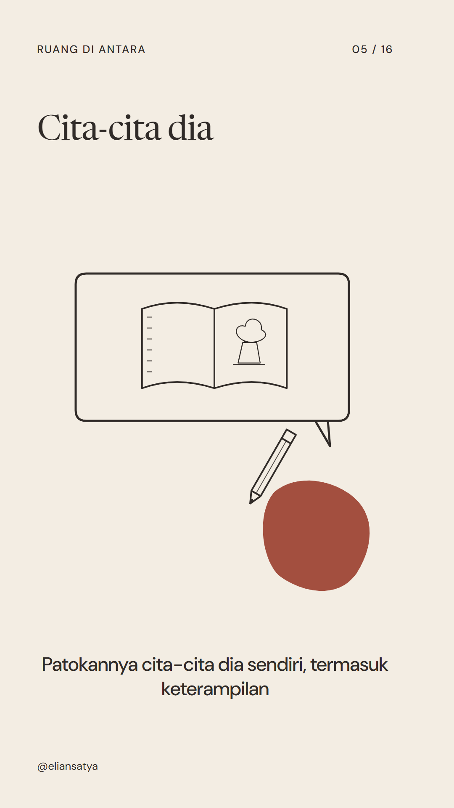
Patokannya cita-cita dia sendiri, termasuk keterampilan atau sifat yang ingin dia kembangkan.
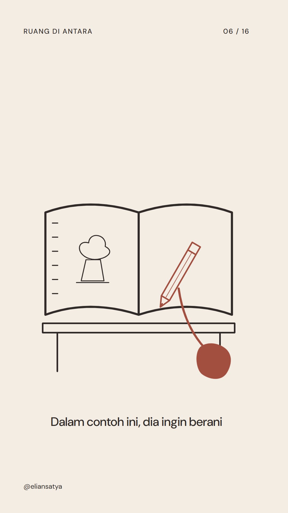
Dalam contoh ini, dia ingin berani berkarya setelah lama menyimpan buku sketsanya.
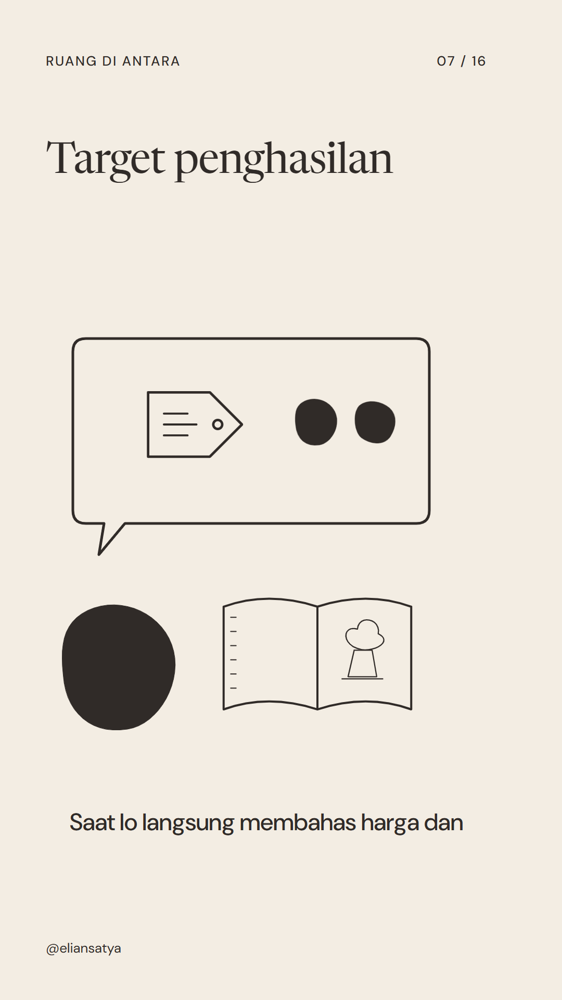
Saat lo langsung membahas harga dan pembeli, percakapan bergeser ke target penghasilan.
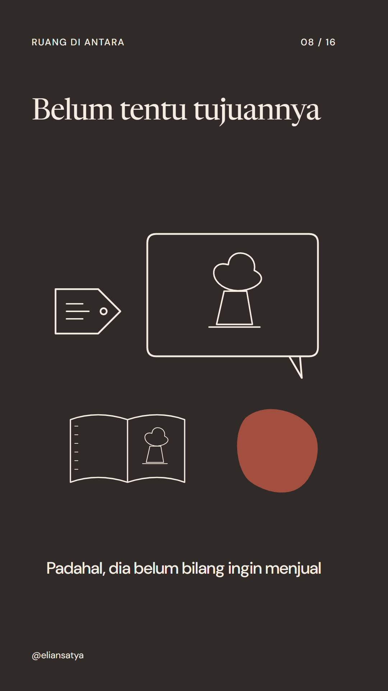
Padahal, dia belum bilang ingin menjual gambarnya.
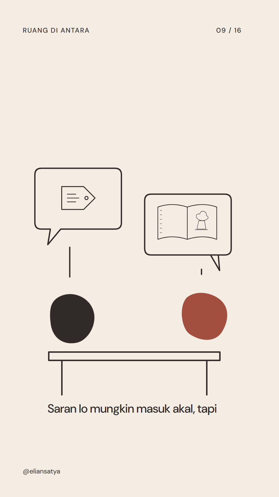
Saran lo mungkin masuk akal, tapi belum tentu menguatkan tujuan yang dia bangun.
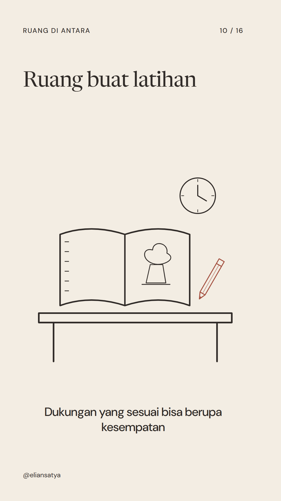
Dukungan yang sesuai bisa berupa kesempatan latihan, dorongan, atau bantuan yang dia butuhkan.
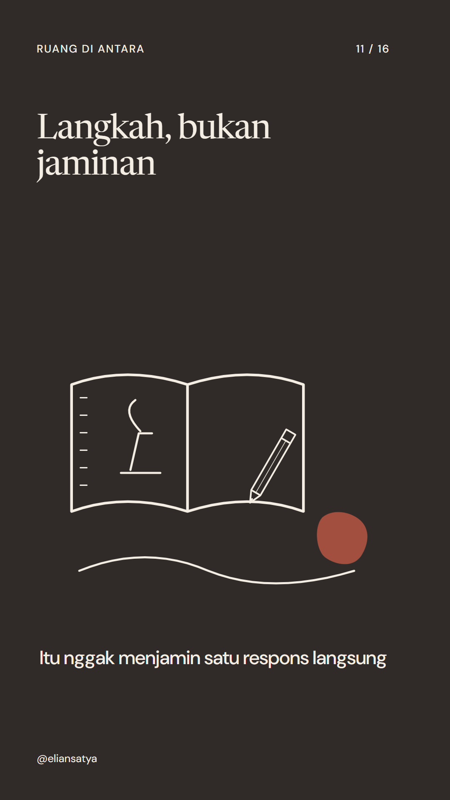
Itu nggak menjamin satu respons langsung membuat cita-citanya tercapai.
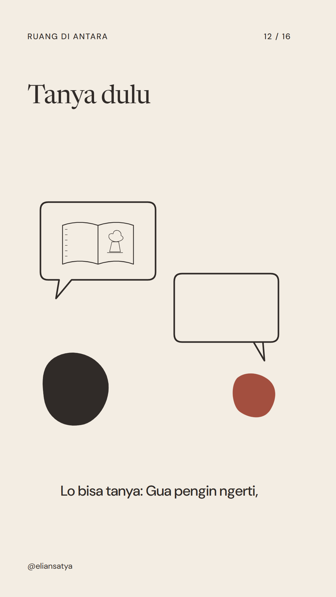
Lo bisa tanya: Gua pengin ngerti, bagian mana yang pengin lo coba lagi?
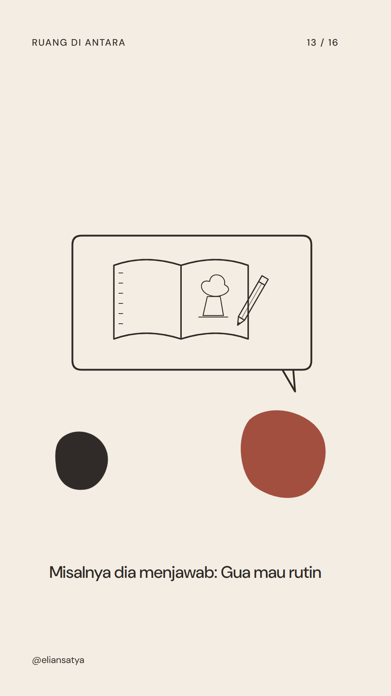
Misalnya dia menjawab: Gua mau rutin menggambar dulu, tanpa mikirin hasilnya harus dijual.
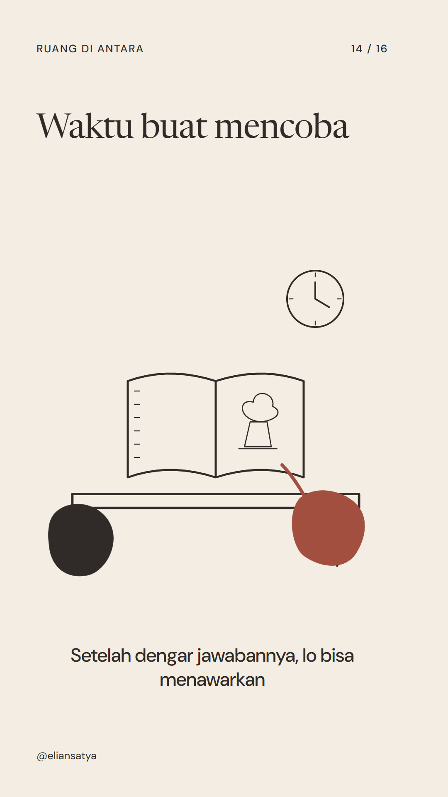
Setelah dengar jawabannya, lo bisa menawarkan waktu latihan yang cocok dengan rencana kalian.
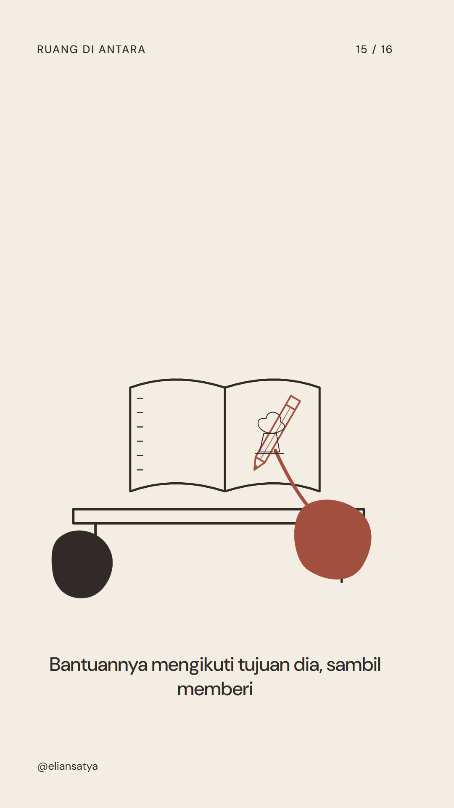
Bantuannya mengikuti tujuan dia, sambil memberi ruang buat dia mengerjakan langkahnya sendiri.
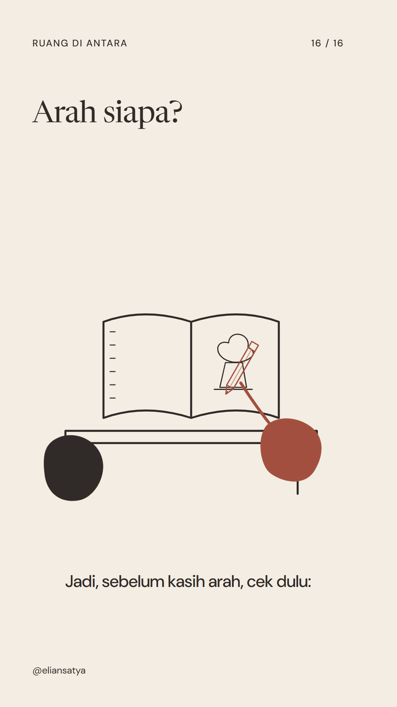
Jadi, sebelum kasih arah, cek dulu: arah siapa yang sedang lo dukung?